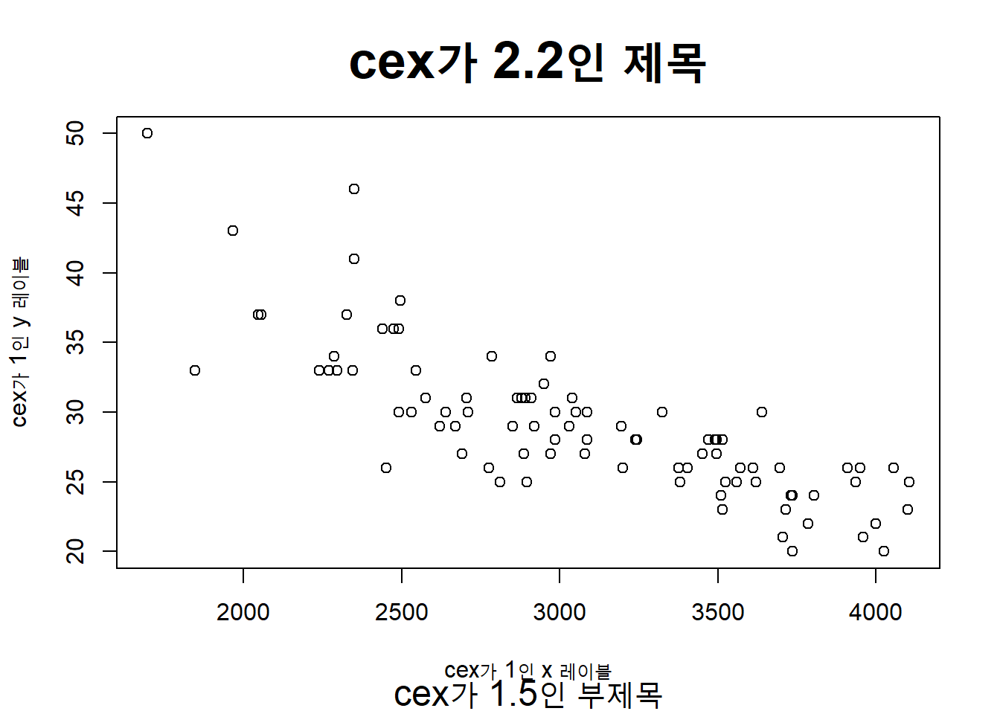

4.4 영역 분할/결합 방법 2 : layout()
layout() 함수를 사용하면 행렬(matrix,mat)로 분할하려는 그래프 영역의 순서(sequence)와 열의 폭과 행의 높이(widths of column, heights of row), 영역 나누기/합치기(divide/combine)를 자유롭게 조절할 수 있으므로 위에서 소개한 par(mfrow = ), par(mfcol = ) 보다 사용자에게 보다 높은 자유도를 제공하므로, 매우 유용하고 강력한 함수라고 하겠습니다. layout() 함수는 par(mfrow = )나 par(mfcol = ) 함수와는 병행해서 사용할 수 없으므로 그래프 분석을 시작하기 전에 무슨 함수를 사용할 것인지 결정을 하고 하나를 선택해야만 합니다.
layout.show(n)은 현재의 layout에 대한 외곽선을 n 만큼의 그래프 갯수만큼 볼 수 있게 해주는 함수입니다. 아래에 layout()과 layout.show(n) 함수 예를 하나 들어보겠습니다. matrix() arguments 안의 숫자가 그래프가 그려지는 순서인데요, byrow=TRUE 로 했으므로 상단 왼쪽부터 시작해서 지그재그로 4개의 그래프를 그릴 수 있는 영역을 만들어보았습니다. byrow= FALSE 로 지정하면 왼쪽 위에서 왼쪽 아래로, 다시 오른쪽 위에서 오른쪽 아래 방향으로 그래프 생성 순서가 설정됩니다.
##-----------------------------------
## layout
##-----------------------------------
# Save default par values
op <- par(no.readonly = TRUE)
# divide the divice into 2 rows and 2 columns
# allocate figure 1, 2, 3, 4 from upper left to lower right
layout(matrix(c(1,2,3, 4), 2, 2, byrow = TRUE))
# show the current layout
layout.show(4)
Figure 4.6: 그래프 영역의 창 분할과 그래프 결합 - 3
layout() 함수를 활용하면 그래프 영역을 합칠 수도 있습니다.
이게 par(mfrow = )또는 par(mfcol = ) 대비 꽤 유용한 기능 중의 하나입니다. 2 by 2 로 나눈 영역에서 1행 1열에만 그래프 영역 1개를 남겨놓고, 2행의 1열과 2행의 2열은 합쳐보는 예제를 아래에 들어보겠습니다. 숫자 ’0’은 비어있는 그래프 영역이 되겠으며, 동일한 숫자를 행렬(matrix) 안에 나란히 입력하면 그 영역을 합쳐서 제시하라는 뜻입니다.
아래 예에서는 1행2열에 ’0’이 입력되었으므로 비어있고, 2행1열과 2행 2열에 나란히 ’2’가 기입되었으므로 2행1열과 2행2열이 합쳐져서 1개의 그래프 영역으로 표시가 되었습니다.
## divide the device into two rows and two columns
## allocate figure 1 the intersection of column 1 and row 1
## allocate figure 2 all of row 2
layout(matrix(c(1,0,2,2), 2, 2, byrow = TRUE))
## show the current layout
layout.show(2)
이해를 돕기위해서 이번에는 1행 1열과 1행 2열을 하나로 합치고, 2행 1열은 비워놓고 2행2열만 남겨놓는 layout을 만들어보는 예제를 아래에 들어보겠습니다.
## divide the device into two rows and two columns
## allocate figure 1 all of row 1
## allocate figure 2 the intersection of column 2 and row 2
layout(matrix(c(1, 1, 0, 2), 2, 2, byrow = TRUE))
## show the current layout
layout.show(2)이번에는 10cm 정사각형 모양의 그래프 영역을 생성해보겠습니다. 폭은 widths = lcm( ) 으로, 높이는 heights = lcm( ) 으로 설정을 해주면 되겠습니다.
## create single figure of 10cm square
layout_1 <- layout(matrix(1), widths = lcm(10), heights = lcm(10))
layout.show(layout_1)
이번에는 그래프 생성 순서(sequence)의 위, 아래를 바꾸어 보고, 그래프의 넓이(widths)와 높이(heights)를 서로 다르게 하는 그래프 영역을 만들어보겠습니다. 가운데에 산포도를 그려놓고 상단과 우측에 작은 크기의 히스토그램이나 박스플롯을 병행해서 그릴 때 유용하게 사용할 수 있습니다.
참고로, respect = TRUE 는 가로 넓이와 세로 높이의 비율을 고려해서 그래프 영역을 설정하라는 옵션입니다.
# divide device into two rows and two columns
# allocate figure 1 the intersection of column 1 and row 2
# allocate figure 2 the intersection of column 1 and row 1
# allocate figure 3 the intersection of column 2 and row 2
# no plot the intersection of column 2 and row 1
# widths 8cm and 4cm respectively
# heights 4cm and 8cm respectively
# respect relations between widths and heights
layout_2 <- layout(matrix(c(2, 0, 1, 3), 2, 2, byrow = TRUE),
widths = lcm(c(6, 4)),
heights = lcm(c(4, 6)),
respect = TRUE)
layout.show(layout_2)
# Reset par to the default values at startup
par(op)다음번 포스팅에서는 ’낮은 수준의 그래프 함수 (Low Level Graphics Functions)’에 대해서 알아보도록 하겠습니다. 앞서의 ’높은 수준의 그래프 함수’와 ’그래프 모수’에 대해서 예를 들 때 이미 ’낮은 수준의 그래프 함수’를 곁들여서 사용하기는 했습니다만, 일목요연하게 한번 더 정리하고 개념을 확실하게 다잡는 다는 의미에서 다음번에 포스팅하도록 하겠습니다.